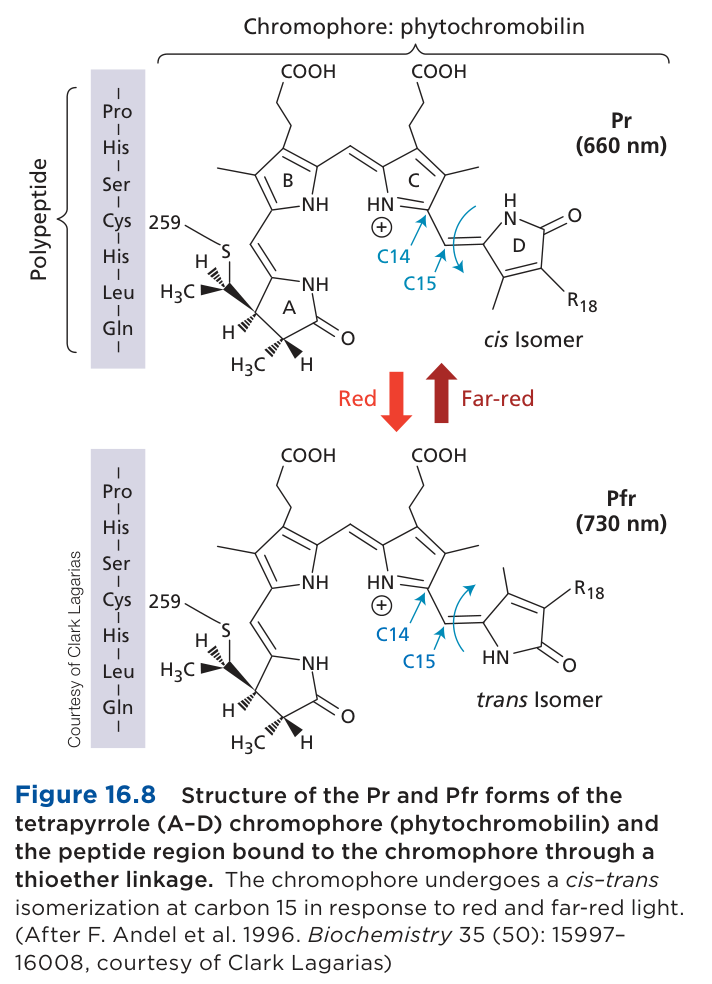
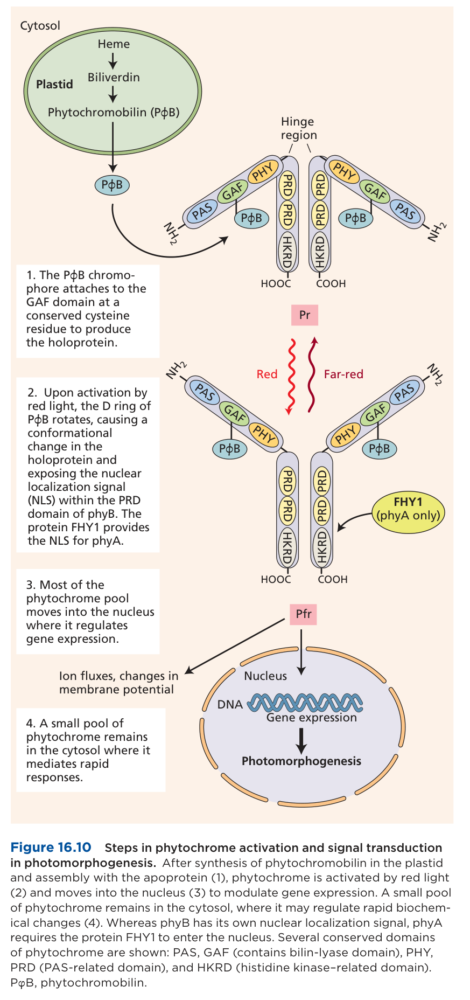
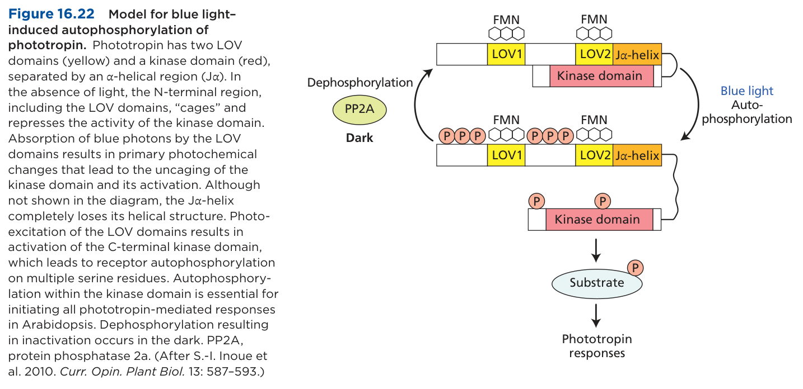
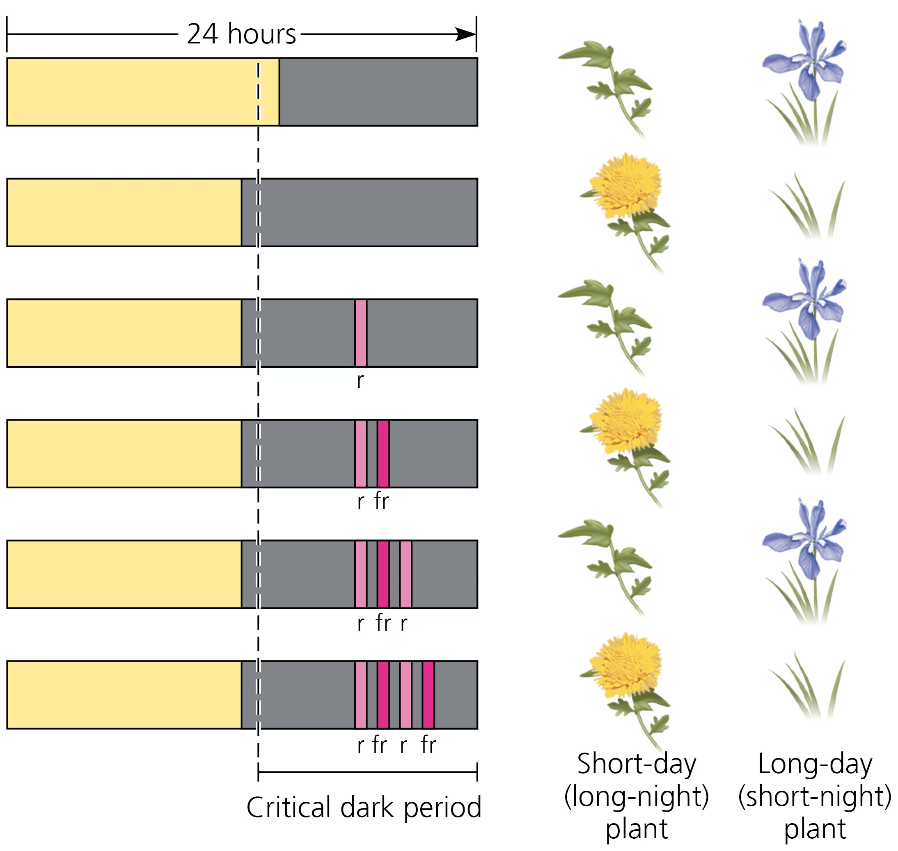
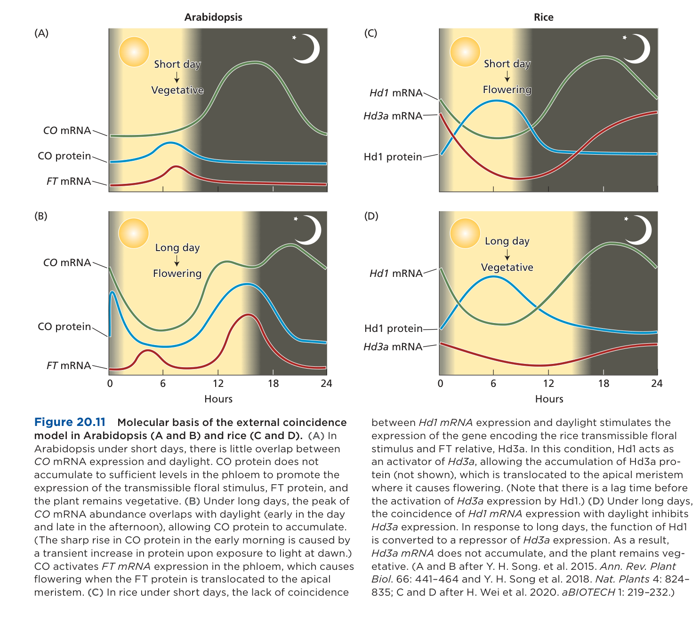
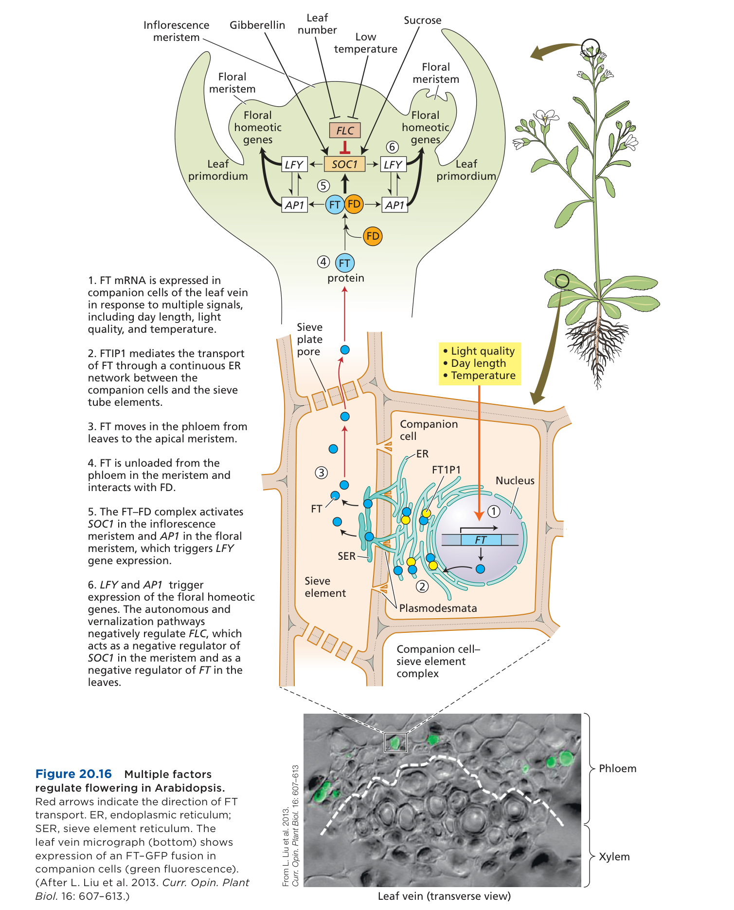

沒有眼睛、鼻子、嘴巴，生命如何感知世界？
從「大腸桿菌偵測乳糖」到「植物看見紅光與藍光、算準黑夜長度」——一次看透蛋白質構形開關、光敏素入核、近日時鐘與外部一致性模型（CO → FT 開花素）。
不論是單細胞細菌還是高大樹木，缺乏動物感官器官的生命，靠的都是同一套底層邏輯：外界訊號（化學分子或光子） → 撞上專門的受體蛋白 → 誘發蛋白質三維構形改變 → 進而開關 DNA 上的基因轉錄！
01 跨界總對照：大腸桿菌偵測乳糖 vs. 植物看見光與光週期
先看這張對照表，把大腸桿菌（原核）與植物（真核）並排在一起，你會立刻看見跨物種生命設計的驚人共通性：
| 感測步驟 | 大腸桿菌（沒嘴巴、沒鼻子）偵測乳糖 | 植物（沒眼睛、沒手錶）偵測光與光週期 |
|---|---|---|
| ① 外界訊號 | 環境中的乳糖分子（化學訊號） | 陽光中的紅光、遠紅光、藍光光子與日夜長度（物理訊號） |
| ② 第一線收訊 | 靠基礎滲漏轉錄常備少數通透酶（LacY）運進乳糖，再由常備 β-半乳糖苷酶轉成異乳糖（詳見 第 15 篇） | 細胞內的光受體蛋白（如光敏素、隱色素、促向光蛋白）透過呈色基團直接吸收特定波長光子 |
| ③ 蛋白質構形切換 | 異乳糖結合 Lac 抑制蛋白 → 蛋白質三維構形改變 → 鬆手離開 DNA 操作子 | 呈色基團碳雙鍵發生順反異構化 → 光敏素由 Pr 轉為 Pfr → 構形改變後移入細胞核；促向光蛋白照藍光後展開封鎖並自我磷酸化 |
| ④ 進階多訊號／計時 | 搭配 PTS 磷酸接力 → cAMP–CAP 測葡萄糖，組成 AND 邏輯閘 | 光受體校準 24 小時近日時鐘，以外部一致性模型（CO 穩定度）判讀日長 |
| ⑤ 最終生理輸出 | 開啟 lac 操縱組轉錄，大量製造乳糖分解酵素 | 降解核內 PIF 改寫基因；葉片產 FT 開花素經韌皮部運至莖頂誘發開花，或調控萌發、遮蔭迴避與休眠 |
02 植物沒有眼睛，怎麼「看見」光線變化？（三大光受體）
植物體內有兩類完全不同分工的吸光分子：葉綠素負責吸收光能進行光合作用（抓能量），而光受體蛋白則負責讀取光線的顏色、強弱與時間（收情報）。
1. 光敏素（Phytochrome）——偵測紅光與遠紅光的分子開關
- 怎麼用化學結構「看見」光？（圖 1）：光敏素蛋白接上一塊負責吸光的小分子（呈色基團，稱為光敏素膽素）。黑暗中它呈現無活性的 Pr 型；一旦吸收 660 nm 紅光的能量，吸光小分子內部的碳碳雙鍵會瞬間從順式轉為反式（高中化學學過的順反異構化），就像撥動開關一樣，牽動整顆光敏素蛋白改變三維構形，變成有活性的 Pfr 型！若改照 730 nm 遠紅光，雙鍵會再轉回去，迅速變回無活性的 Pr 型（Taiz 7e Ch. 16）。
- 看見光之後怎麼下達指令？（圖 2）：變成活化的 Pfr 型後，光敏素原本藏在內部的「入核訊號」暴露出來，使它能從細胞質移動進入細胞核。進入細胞核後，Pfr 會促使原本在黑暗中壓抑光反應基因的轉錄因子（PIF 家族）被細胞分解，從而一口氣改寫高達基因體約 10% 的基因表現（Taiz 7e Ch. 16；Sadava 12e Ch. 35）。

🔍 點擊圖片可全螢幕放大
🔍 點擊圖片可全螢幕放大2. 兩大藍光受體：隱色素（Cryptochrome）與促向光蛋白（Phototropin）
- 隱色素（考題亦作隱花色素）：主要在細胞核內吸收藍光並改變蛋白質構形，幫忙保護促進光反應的轉錄因子不被分解，參與抑制幼苗徒長、校準生物時鐘與調控開花（Taiz 7e Ch. 16）。
- 促向光蛋白（考題常作向光素，圖 3）：固定在細胞膜上；黑暗中它的前端構造會「蓋住並鎖住」自身的酵素（激酶）活性區。吸收藍光光能後，這層封鎖展開、蛋白質自我磷酸化並啟動下游訊號，負責控制向光性彎曲、氣孔開啟，以及葉綠體位置移動（弱光時排在上下壁多吸光、強光時移到側壁避免曬傷）（Taiz 7e Ch. 16）。

🔍 點擊圖片可全螢幕放大03 光敏素只看「亮不亮」，植物怎麼「算時間」偵測光週期與開花？
知道「現在亮不亮」還不夠——植物怎麼算出「今天黑夜夠不夠長、現在是不是秋天」？分兩個層次看最清楚：
層次 1：高中必考的核心實驗——植物量的是「連續黑夜（臨界夜長）」與 R／FR 可逆性
短日照植物其實需要「連續黑夜長於臨界夜長」才開花（實為長夜植物），長日照植物則需要「連續黑夜短於臨界夜長」（實為短夜植物）。如果在長夜中段閃短短幾分鐘紅光（暗期中斷），Pr 瞬間變回 Pfr，等於把一個長夜切成兩段短夜（短日不開、長日反開）；但如果緊接著照遠紅光把 Pfr 翻回 Pr，紅光效果就立刻被取消——結果永遠以最後一次照光為準（圖 4，Campbell 13e Ch. 39）。

🔍 點擊圖片可全螢幕放大r（紅光）→ 短日不開、長日開花；插入 r → fr（遠紅光）→ 恢復原狀（短日開花、長日不開）；不論閃幾次，永遠以最後一次光色決定結果。層次 2：高中常見說法（暗回復）vs. 現代科學完整機制（24 小時生物時鐘＋外部一致性模型）
高中常見說法會提到「入夜後 Pfr 會緩慢自發變回 Pr（暗回復），黑夜越長剩餘 Pfr 越少」。但進一步實驗發現，植物不能只靠暗回復算時間——因為 Pfr 暗回復速率會隨氣溫改變（天熱變快、天冷變慢，Sadava 12e Ch. 37），若只靠它，天氣一熱就會算錯季節；而且把大豆放進 64 小時超長暗期測試暗期中斷時，開花率會每隔約 24 小時規律起伏（Taiz 7e Ch. 20 Fig. 20.10）。這證明植物體內真正的鬧鐘，是一個不受氣溫干擾的 24 小時近日時鐘（生物時鐘）：

🔍 點擊圖片可全螢幕放大
🔍 點擊圖片可全螢幕放大04 除了開花，植物還用「分子眼睛＋光週期」控制哪些生理現象？
| 生理現象 | 光敏素／光週期怎麼調控？ | 生態與生存意義 |
|---|---|---|
| ① 種子萌發 | 萵苣等小型需光種子照紅光 → Pr 轉 Pfr → 促進吉貝素（GA）合成、弱化胚乳促發芽（遠紅光可逆轉） | 確保養分有限的小種子只在林冠破口或土表才發芽，不會埋太深耗盡養分（Campbell 13e；Taiz 7e） |
| ② 去黃化（幼苗綠化） | 暗中幼苗細長蒼白；鑽出土照光後，光敏素降解 PIF、搭配隱色素與促向光蛋白減緩莖伸長、展開葉片並合成葉綠素 | 在土裡先把全部能量拿去衝破地面，見到陽光才轉成光合作用模式（Campbell 13e；Taiz 7e） |
| ③ 遮蔭迴避（避蔭反應） | 上方樹冠葉綠素吸走紅光、穿透遠紅光 → R:FR 比下降、Pfr 減少 → 加速節間垂直伸長、減少分枝 | 察覺頭頂有競爭對手遮光，立刻把資源全壓在長高搶陽光（Campbell 13e；Taiz 7e；RavenPlants 8e） |
| ④ 芽休眠與秋季落葉 | 溫帶落葉樹（如白楊）靠光敏素 A 與近日時鐘感測秋天日長縮短，配合低溫啟動芽鱗休眠與葉片離層脫落 | 在嚴冬降臨前先回收養分、脫葉防凍傷並鎖定休眠芽過冬（Taiz 7e Ch. 19 & 23；RavenPlants 8e） |
| ⑤ 貯藏器官／塊莖形成 | 日長變化同步調控無性生殖與馬鈴薯塊莖等地下貯藏器官發育 | 在季節轉換前及早儲備澱粉等越冬與繁殖資源（Taiz 7e Ch. 20；Hopkins Ch. 24） |
05 經典英文原文教科書逐句考證
以下所有英文原文均原封不動回溯自 Ze-Agent Vault 正式譯本，提供高中教師備課、教甄申論與同學溯源查證。
"Once in the nucleus, phytochromes interact with transcriptional regulators to mediate changes in gene transcription. Thus, one important function of phytochrome is to serve as a light-activated switch to bring about global changes in gene expression."
"A critical feature of the external coincidence mechanism is that flowering in LDPs is promoted when a light-sensitive phase of the CO diel rhythm, which is generated in the leaf (the site of perception of the photoperiodic stimulus), coincides with the presence of light (an external signal). ... In the early evening, by contrast, cryptochromes, phyA, and FLAVIN-BINDING KELCH REPEAT, F-BOX 1 (FKF1)... antagonize this degradation and allow the CO protein to build up."
[Ch. 19] "Circadian clock genes and flowering genes (see Chapter 20), together with phytochrome A, are involved in controlling dormancy in deciduous trees in relation to photoperiod and temperature."
[Ch. 19] 近日時鐘基因、開花基因連同光敏素 A，共同控制落葉樹因應光週期與溫度的休眠。
[Sadava 12e Ch. 37] "If the rate at which Pfr dark-reverts to Pr speeds up as the temperature rises, then the amount of Pfr in a plant will decline, even if the light exposure stays the same."
[Sadava] 若 Pfr 暗逆轉速率隨溫度上升而加快，即使光照不變，植物中 Pfr 含量仍會下降（光敏素因而兼具溫度感測器功能）。
06 高中教學、常見陷阱、教甄實戰與查證邊界
講到分子調控或植物感應時，直接把「大腸桿菌怎麼嚐乳糖」與「植物怎麼看見紅光、量出黑夜」放在同一個畫面——讓學生發現生命沒有眼睛鼻子沒關係，因為「蛋白質構形開關」就是細胞最精密的分子感官！
常見命題陷阱與審定名詞提醒
- 陷阱 1：「光敏素是植物激素，在葉片合成後經韌皮部運至莖頂誘發開花」→ 錯！光敏素是胞內光受體蛋白（在葉片細胞質→細胞核作用）；真正搭韌皮部快遞運到莖頂的是下游產物 FT 蛋白（開花素）。
- 陷阱 2：「短日照植物只要白天天數短、或黑夜恰等於臨界夜長就會開花」→ 錯！決定因子是連續暗期大於臨界夜長（115 嘉科實中第 1 題考點）。
- 審定名詞：依臺灣教育部《生命科學名詞》，
phytochrome＝光敏素、cryptochrome＝隱色素（教甄亦見隱花色素）、phototropin＝促向光蛋白（教甄常作向光素）、florigen＝開花素、circadian clock＝近日時鐘、shade avoidance＝遮蔭迴避。 - 系列延伸閱讀：回看原核側的完整分子感測機制，請見 大腸桿菌怎麼知道環境中有沒有葡萄糖與乳糖？、操作子會不會被轉錄與轉譯產生蛋白質？ 與 為什麼真核細胞幾乎沒有操縱組？。
本頁所有核心機制（光敏素呈色基團順反異構化、Pr ⇄ Pfr 構形改變與入核、PIF 降解、隱色素與促向光蛋白解除封鎖、臨界夜長與 R/FR 夜間打斷可逆、64 小時暗期近日節律實驗、外部一致性模型 CO/Hd1 與 FT 開花素韌皮部運輸、種子萌發／去黃化／遮蔭迴避／落葉休眠）皆有上述原文書正典直接支持。需誠實標明：「單靠 Pfr 暗回復無法解釋溫度補償」係整合 Hopkins Ch. 22／Sadava Ch. 37（暗回復速率對溫度敏感）與 Taiz Ch. 20／Hopkins Ch. 24（生物時鐘具溫度補償且暗期敏感度呈 24 小時振盪）之跨章邏輯統整（Vault 原文書中未出現「沙漏／hourglass」字樣）；塊莖形成在 Vault 中僅於 Taiz Ch. 20 與 Hopkins Ch. 24 總述列舉，未細論馬鈴薯 StSP6A 分子路徑。